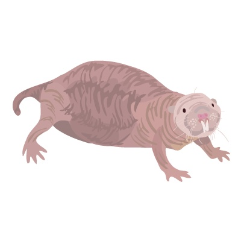

生命・進化・老化
体重35グラム。見た目はしわくちゃで、歯はむき出し。哺乳類で唯一、「死の法則」を破った生き物が、東アフリカの地下トンネルの奥にいる。
ジェニファー・ジャーヴィスが哺乳類初の真社会性をScience誌に発表。ハダカデバネズミの異常な生態が科学の表舞台に登場した。
同年の世界：スペースシャトル・コロンビアが初飛行。MTVが放送開始。IBMが初の個人用コンピュータを発売した年。
ジャーヴィスの発見から45年。この小さなげっ歯類は、老化研究の最前線で「なぜ私たちは老いるのか」という問いそのものを書き換えつつある。
30代に入ったあたりで、膝が痛くなった。階段を駆け上がれなくなった。白髪を見つけた。肌にハリがなくなった。健康診断の数値がじわじわ悪くなっていく。それを「年だから」と受け入れた。当然のことだと思った。
あなただけではない。人間も、犬も、猫も、マウスも、クジラも——あらゆる哺乳類が、年を取れば取るほど死にやすくなる。30歳を過ぎた人間の死亡リスクは、約8年ごとに倍増する。これは200年前に発見された「法則」であり、あらゆる哺乳類に当てはまると信じられてきた。
その法則を、体重35グラムのげっ歯類が破った。
200年間「あたりまえ」とされてきた死の法則と、それを裏切る生き物の話。自分の年齢を入力して、「老化しない体」で生きる感覚を数字で体験する。
ベンジャミン・ゴンペルツベンジャミン・ゴンペルツ（1779–1865）
イギリスの数学者・保険数理士。ユダヤ人であったため大学教育を受けられず独学で数学を修めた。死亡率の数理モデルで知られる。は保険料を計算していた。イギリスの保険会社で、誰がいつ死ぬかを予測する——それが彼の仕事だった。膨大な死亡記録を分析するうちに、ゴンペルツはひとつの規則性に気づく。人間の死亡リスクは、成人以降、年齢とともに指数関数的に増加する。30歳を過ぎると、約8年ごとに死ぬ確率が倍になる。40歳の死亡リスクは30歳の2倍。50歳は4倍。60歳は8倍。
日常の感覚で言えばこうだ。30歳のあなたが「今年中に死ぬ確率」は約0.1%。60歳になるとそれが約1%になる。80歳では約5%。数字は小さく見えるかもしれないが、増え方が指数的であることが重要だ。直線ではなく、カーブが急激に立ち上がる。これが老化の正体であり、ゴンペルツはこれを「死の法則」と呼んだ。
この法則は200年間、ほぼすべての哺乳類で確認されてきた。マウスも、犬も、馬も、ゾウも、クジラも——体の大きさや寿命が違っても、「年を取るほど死にやすくなる」という指数増加のパターンは同じだった。ゴンペルツは自分の発見をニュートンの万有引力比喩としての引用。
ゴンペルツ本人が自分の死亡率法則をニュートンの重力法則になぞらえた、という逸話がある。それほど普遍的な法則だと考えていた。に匹敵すると考えたという。
ケニアとエチオピアの乾燥した大地の下に、最大で300匹が暮らすコロニーがある。体長10センチほど。体重は35グラム——単三電池ひとつと同じくらいだ。毛はほぼなく、皮膚はしわだらけで、大きな前歯が唇の外に突き出している。目はほとんど見えない。世界で最も「美しくない」哺乳類の一つと呼ばれることもある。ハダカデバネズミ（Heterocephalus glaber）だ。
ジェニファー・ジャーヴィス
Jennifer U. M. Jarvis — 生物学者
ケープタウン大学の動物学者。1960年代からハダカデバネズミを研究し、1980年にケニアで野生コロニーを調査。1981年にScience誌で「哺乳類初の真社会性」を発表し、この動物を一躍有名にした。
ジャーヴィスが発見したのは、ハダカデバネズミの社会構造だった。コロニーには1匹の「女王」がいて、残りの個体は繁殖せずに巣の維持や食料調達に従事する。アリやハチと同じ真社会性真社会性（eusociality）
1匹の女王だけが繁殖し、他の個体は労働に専念する社会構造。昆虫では一般的だが、哺乳類ではハダカデバネズミとダマラランドデバネズミの2種しか知られていない。だ。哺乳類では前例がなかった。
| ハダカデバネズミ | ハツカネズミ | ヒト | |
|---|---|---|---|
| 体重 | 約35 g | 約25 g | 約60 kg |
| 体サイズから予測される寿命 | 約6年 | 約4年 | — |
| 実際の最大寿命 | 41年以上 | 約4年 | 約120年 |
| がん発生率 | 極めて低い | 高い | 加齢とともに増加 |
| ゴンペルツ則 | 従わない | 従う | 従う |
| 繁殖能力の衰え | 見られない | 急速に低下 | 閉経あり |
この表の「実際の最大寿命」を見てほしい。体重35グラムのげっ歯類が41年以上生きる。同じくらいの体重のハツカネズミが4年しか生きないことを考えると、予測の7倍近く長い。しかも、驚くべきことに老齢のハダカデバネズミは筋力も繁殖力も心臓の機能もほとんど衰えない。30歳を超えたメスが子どもを産んだ記録がある。
だが、ジャーヴィスの時代にはまだ誰も「老化」に注目していなかった。寿命が長いのは知られていたが、それが「法則の破れ」であるとは思われていなかった。決定的なデータが出たのは、発見から37年後のことだ。
2013年、ロチェスター大学のヴェラ・ゴルブノヴァとアンドレイ・セルアノフヴェラ・ゴルブノヴァ＆アンドレイ・セルアノフ
ロチェスター大学の生物学者夫妻。老化とがんの研究で共同で成果を出しており、ハダカデバネズミの高分子量ヒアルロン酸の発見でNature誌に掲載された。は、ハダカデバネズミの細胞を培養しているとき、培地がやけに粘ついていることに気づいた。調べてみると、細胞が分泌していたのは高分子量ヒアルロン酸高分子量ヒアルロン酸（HMM-HA）
ヒアルロン酸は皮膚や関節に含まれるゼリー状の物質。ハダカデバネズミのものはヒトやマウスの5倍以上大きく、細胞の異常増殖を抑える役割がある。化粧品に使われるのは同じ名前だが、サイズがまったく違う。だった。ヒトやマウスのヒアルロン酸の5倍以上のサイズ。この巨大な分子が、細胞同士の隙間を埋め、細胞が密集しすぎる前に増殖を止めてしまう——「早期接触阻害」という仕組みだ。がん化の第一歩である「制御なき増殖」が、そもそも始まらない。
年齢スライダーを動かして、3種の死亡リスク曲線を比べてみてほしい。ヒトとマウスはゴンペルツ則に従って急上昇する。ハダカデバネズミだけが、水平線のままだ。
死亡リスクの倍増ペースはゴンペルツ則に基づく概念的な可視化。ヒトは約8年で倍増、マウスは寿命比率で換算。ハダカデバネズミのデータはRuby et al.（2018）に基づき、ハザード率が年齢によらずほぼ一定であることを反映している。
誤解
ハダカデバネズミは「不老不死」の動物である
実際は
死亡リスクが年齢とともに増加しないだけで、病気・事故・捕食で死ぬ。「老化しない」と「死なない」はまったく別の話
誤解
がんに「まったく」ならない
実際は
2016年に飼育下で数例のがんが報告されている。「ほぼならない」が正確。それでも他の哺乳類と比べると驚異的に少ない
誤解
体が小さいから長生きできる
実際は
一般に体が小さい哺乳類ほど寿命は短い。同サイズのマウスは4年。ハダカデバネズミの41年は異常値であり、小ささでは説明できない
ゴンペルツ則を「知識」として理解するのと、「自分の体」で感じるのは違う。ここでは、あなたの年齢を入力して、「老化しない体」を持っていたらどうなるかを数字で体験する。
あなたの年齢を入力してください。ゴンペルツ則に従う「通常の老化」と、ハダカデバネズミのように死亡リスクが一定の「老化なし」を比較する。
計算はゴンペルツ則の単純化モデル（30歳基準、8年ごとに死亡リスク倍増）と指数減衰モデル（死亡リスク一定＝約1/10,000 per day）に基づく概念的なシミュレーション。実際の生存率はさまざまな外的要因に影響される。
数字を見て、何を感じただろうか。「老化しない」とは、超人的な不死ではない。今のあなたの体調が、30年後も、50年後も、ただ続くということだ。膝は痛くならない。視力は落ちない。がんのリスクも増えない。私たちが「当然」だと思っている衰えが、生物学的には必ずしも「当然」ではないのかもしれない——そういう問いを、このげっ歯類は突きつけている。
研究者が注目している防御機構は、大きく3つある。どれか1つが「答え」なのではなく、複数の仕組みが重なり合って老化を遅延させている——あるいは無効化している——と考えられている。
プログラム説——老化は遺伝子に書き込まれている
テロメアと生体時計
細胞が分裂するたびに、染色体の末端にあるテロメアが少しずつ短くなる。テロメアが一定の長さを下回ると、細胞は分裂をやめる。靴紐の先端のプラスチックカバーが擦り減っていくようなものだ。
だが、ハダカデバネズミのテロメアは加齢によって短くならない——むしろ伸びるという報告もある。「時限爆弾」が最初から組み込まれていないかのようだ。
損傷蓄積説——使えば使うほど壊れる
酸化ストレスとフリーラジカル
呼吸のたびに、細胞は活性酸素を生み出す。この「体のサビ」が蓄積し、DNAやタンパク質を傷つけるのが老化の原因だとする説。古い車がサビで動かなくなるのと同じイメージだ。
面白いことに、ハダカデバネズミの体内の酸化ダメージは実はマウスより多い。にもかかわらず、それが機能低下につながらない。つまり「ダメージを受けないから老化しない」のではなく、ダメージを受けても修復してしまうのがこの動物の異常さだ。
進化論的説明——老化は「手抜き」の結果
使い捨ての体（Disposable Soma理論）
自然界では、ほとんどの動物は捕食・病気・事故で若いうちに死ぬ。だとすれば、「80歳まで体を完璧に維持する遺伝子」を進化させるメリットは薄い。限られたエネルギーは、体の修復よりも繁殖に回した方が遺伝子が残る。老化とは、進化が「長期保証」を切り捨てた結果だという考え方。
ハダカデバネズミは地下で天敵がほぼおらず、外的な死因が極めて少ない。だから「長期保証」に投資する進化的なメリットがあった——と解釈できる。だが、同じ地下に暮らすモグラは普通に老化するので、環境だけでは説明しきれない。
年表の凡例: ● ハダカデバネズミと老化研究の核心的発見 ○ 関連する出来事
1825
ゴンペルツ、「死の法則」を発表
ロンドンの保険数理士ベンジャミン・ゴンペルツが王立協会で論文を読み上げた。死亡リスクは成人以降、指数関数的に増加する。その後200年、この法則はあらゆる哺乳類に当てはまると信じられた。
1842
ハダカデバネズミの最初の記載
ドイツの動物学者エドゥアルト・リュッペルが東アフリカで採集し記載。しかし長い間、その異様な外見から「病気の個体」や「新生児」と誤解されることもあった。
1981
ジャーヴィス、哺乳類の真社会性を発見
ケープタウン大学のジェニファー・ジャーヴィスがScience誌に発表。ハダカデバネズミはアリやハチのように女王制の社会を持つ——哺乳類では前例のない発見だった。
2009
早期接触阻害の発見
ロチェスター大学のセルアノフとゴルブノヴァが、ハダカデバネズミの細胞がマウスより早く増殖を止めることを発見。がんにならない仕組みの手がかりを得た。
2013
高分子量ヒアルロン酸の発見
同チームがNature誌に発表。培養皿の「粘つく液体」の正体は、通常の5倍以上の巨大なヒアルロン酸だった。これが早期接触阻害のカギであることが示された。
2018
ゴンペルツ則の例外であることが証明される
Google傘下のCalico社のバフェンスタインらがeLife誌に発表。3,000匹以上のデータを分析し、死亡リスクが年齢とともに上昇しないことを示した。哺乳類で初めてゴンペルツ則に従わない種として記録された。
2019
批判論文と応答
ダマン（Dammann）らがeLife誌でデータの偏りを指摘。バフェンスタインらは応答論文で反論。「老化しないのか、それとも非常に遅いだけなのか」という問いは現在も完全には決着していない。
2023
マウスにハダカデバネズミの遺伝子を導入
ゴルブノヴァらがNature誌に発表。ハダカデバネズミのHAS2遺伝子をマウスに導入すると、がん発生率が低下し、寿命が延び、炎症が減少した。異種間で「長寿メカニズム」を移植できる可能性が示された。
ハダカデバネズミの存在は、私たちが無意識に信じている前提を揺さぶる。「生き物は年を取れば衰える」「老いは避けられない」——これらは200年間、科学的な法則として成立していた。だが法則は、例外が見つかった瞬間に「法則」ではなくなる。少なくとも、「普遍的な」法則ではなくなる。
"I think the animals keep their house really neat and clean, rather than accumulate damage."
この動物たちは、ダメージを蓄積するのではなく、家を常にきれいに整理整頓しているのだと思う。
— ロシェル・バフェンスタイン（Rochelle Buffenstein）、Calico Life Sciences、Science誌取材に対して（2018年）
ただし、ここで急いで「老化は治せる病気だ」と結論するのは早い。ハダカデバネズミが老化しない理由はまだ完全にはわかっていない。高分子量ヒアルロン酸は重要なピースだが、それだけでは説明しきれない。DNA修復機構、低代謝、真社会性による生活環境——複数の要因が絡み合っている。2023年のマウス実験は希望を持たせるが、ヒトへの応用はまだ遠い。
「老化しない生き物」はハダカデバネズミだけではない。ただし、「老化しない」の意味は種によってまったく異なる。ロブスターは不老不死だという話を聞いたことがあるかもしれない。半分は本当で、半分は神話だ。
| 生き物 | 最大寿命 | メカニズム | 注意点 |
|---|---|---|---|
| ハダカデバネズミ | 41年以上 | 高分子量ヒアルロン酸、DNA修復、低代謝 | 哺乳類で唯一ゴンペルツ則に従わない |
| ロブスター | 推定50〜140年 | 全身でテロメラーゼを発現し続ける | 脱皮のエネルギーが体の成長に追いつかなくなり死ぬ。「老化で死なない」が「不死」ではない |
| ゾウガメ | 255年以上 | 不明（代謝が極めて遅い） | 飼育下では老化が見られない種が多いが、野生では老化の兆候あり |
| ニシオンデンザメ | 推定400年以上 | 極低温・低代謝 | 成長が極めて遅く、性成熟に約150年かかる |
| ベニクラゲ | 理論上無限 | 成体→幼体への「若返り」（分化転換） | 老化の回避ではなく、生活史のリセット。哺乳類とは根本的に仕組みが異なる |
| ヒドラ | 理論上無限 | 全身の細胞を常に入れ替える | 体が単純な構造だからこそ可能。脳や臓器を持つ動物には適用できない |
ロブスターについて補足しておく。ロブスターは全身の細胞でテロメラーゼテロメラーゼ（telomerase）
テロメア（染色体の末端キャップ）を修復する酵素。ヒトでは生殖細胞と幹細胞にしかほぼ存在しないが、ロブスターは全身で活性化し続ける。ただし、がん細胞もテロメラーゼを活性化して「不死化」するため、ヒトでの応用は両刃の剣となる。を発現し続けるため、細胞レベルでは老化が遅い。筋力も繁殖力も衰えない。だが脱皮という物理的プロセスに限界がある。体が大きくなるほど脱皮に必要なエネルギーが増え、最終的に脱皮しきれずに死ぬ。これは「老化」とは違う——だが「不老不死」でもない。
ベニクラゲとヒドラはさらに事情が違う。ベニクラゲは成体が幼体に戻る「若返り」を行うが、これは哺乳類の老化とは別の文脈の話だ。ヒドラは体の構造が極めて単純で、全身の細胞を常に新しく入れ替えている——脳や心臓を持つ私たちには使えない戦略だ。ハダカデバネズミが特別なのは、私たちと同じ哺乳類でありながら老化の法則を破っている点にある。だからこそ、ヒトの老化研究にとって最も重要なモデルとなっている。
"At advanced ages, their mortality rate remains lower than any other mammal that has been documented."
高齢になっても、彼らの死亡率はこれまで記録されたどの哺乳類よりも低いままである。
— カレブ・フィンチ（Caleb Finch）、南カリフォルニア大学・老年学者、Science誌コメント（2018年）
では、老化は「治せる病気」なのだろうか。それとも「避けられない摂理」なのだろうか。ハダカデバネズミはその問いに答えない。ただ、地下トンネルの暗闇の中で、30年前とほぼ同じ体で、今日もトンネルを掘り続けている。

ハダカデバネズミ。しわだらけの皮膚、突き出た大きな前歯、ほとんど見えない目——地下の暗闇に適応した姿が、200年信じられてきた「死の法則」の例外となった。※苦手な方に配慮して少しぼかしています。（原図: Roman Klementschitz, CC BY-SA 3.0 / ぼかし加工）
Naked mole-rat mortality rates defy Gompertzian laws by not increasing with age
この記事の核心を成す論文。3,000匹以上のデータで「死亡リスクが年齢とともに上がらない」ことを示した。批判論文（Dammann et al., 2019）とその反論もセットで読むと、科学の議論がリアルタイムで進んでいる感覚を味わえる。
High-molecular-mass hyaluronan mediates the cancer resistance of the naked mole rat
「培養皿が粘つく」という偶然の観察からがん耐性のメカニズムに迫った論文。実験の着想がどこから来たかを追うだけでも読む価値がある。
Increased hyaluronan by naked mole-rat Has2 improves healthspan in mice
ハダカデバネズミの遺伝子をマウスに入れたらどうなるか——という、SF的な問いに実際に答えた論文。結果は驚くほど肯定的で、がん減少・寿命延長・炎症低下が確認された。
Eusociality in a mammal: cooperative breeding in naked mole-rat colonies
すべての始まり。わずか3ページの論文だが、哺乳類の社会性に関する常識を覆した。ジャーヴィスがケニアの野生コロニーで何を見たかが簡潔に記されている。